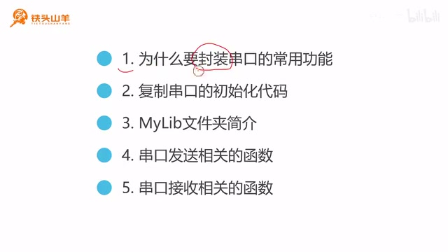
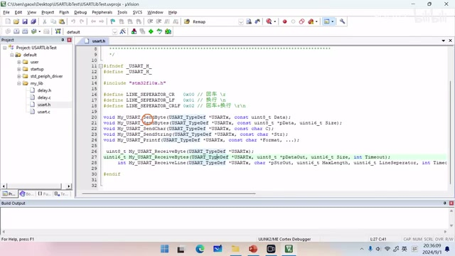
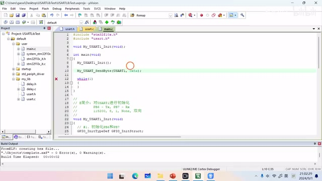
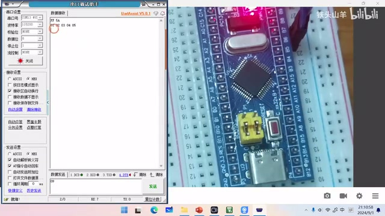
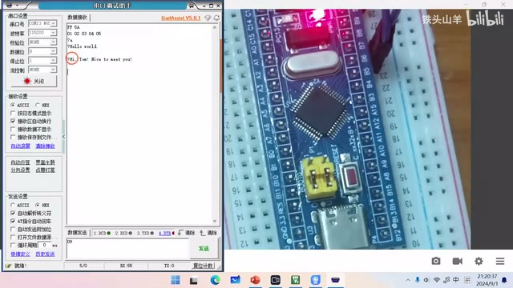
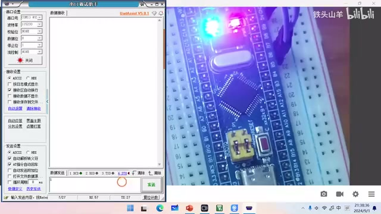
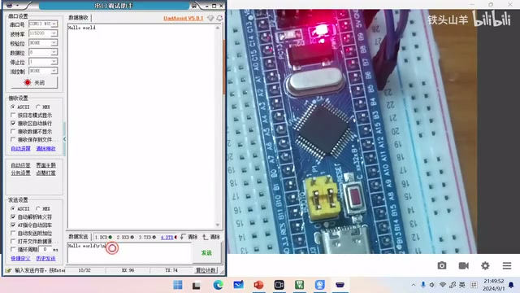

P016 · 3.7 （串口）封装常用功能¶
各位同学大家好，我是铁头山羊。今天我们学习第三章的第七节，讲怎样把之前写过的串口数据发送和接收代码封装成库函数，方便以后调用。
本节安排¶
本期分成五部分：为什么要封装过去的代码；为新工程做准备，把串口初始化代码复制过去；介绍 MyLib 文件夹；以及串口发送、串口接收接口的用法。
为什么要封装¶
先看为什么要封装。回顾之前的代码，如果要通过串口发送数据，我们得查询 TXE 标志，再查询 TC 标志，还要把数据写入发送数据寄存器。要用 printf 格式化打印字符串，还得在下面重写 fputc。接收数据也一样，需要查标志位、操作寄存器。这些步骤很繁琐，而且会重复，所以不如把重复代码分别封装成函数；用到时直接调用，就能大大简化编程过程。

本节课将依次讲封装原因、复制初始化代码、MyLib 文件夹、发送接口和接收接口。 · 原片 00:24
为新工程复制串口初始化代码¶
了解封装的原因后，开始为新工程做准备。登录百度网盘，在课程资料根目录找到模板工程并下载。下载完成后得到压缩包，把它解压到当前文件夹。给解压出的模板工程重新命名为 Uslib Test，也就是 UA 库测试工程；里面的工程文件也改成同名 Uslib Test，然后打开这个工程。
还要打开上期视频的 printf Test 工程。进入它的 Default/User 文件夹，打开 main.c。上期写的 My_USART_Init 就是串口初始化代码，把这段代码整体复制到新工程的 main.c。再把函数原型也复制出来，粘贴到 main 方法前面，并在 main 方法里调用串口初始化。这样复制就完成了。之后可以关闭之前的工程，只保留新工程。
MyLib 文件夹的作用¶
新工程里有一个 MyLib 文件夹，接下来简单介绍它。打开新工程目录，可以看到 MyLib。顾名思义，这里放我们自己写的库。课程里会写各种代码，有些以后会重复用到，比如本章的串口代码；不想每次从头一点点重写，就把它封装在库里。
本章封装了两个文件：USART.h 是头文件，USART.c 是源文件。以后要用串口相关代码，引用头文件就可以使用其中的函数。在工程左边的导航栏里也能找到 MyLib 文件夹。打开后可以看到这次封装的头文件和源文件；双击打开头文件，里面列着已经封装好的编程接口。上面的是数据发送相关接口，下面的是数据接收相关接口。用这些接口会方便很多，也能节省时间。
串口发送接口总览¶
下面进入第四部分，介绍串口数据发送函数。库里一共有五个发送接口，我们逐一看用法：

头文件中把串口发送接口列在上方、接收接口列在下方。 · 原片 05:13
发送一个字节¶
第一个接口叫 My_USART_SendByte。Send 是发送，Byte 是字节，顾名思义，它通过串口发送一个字节，比如 0x01 或 0x02 这样的数值。单个字节就用这个接口发送。
第二个接口是 My_USART_SendBytes，比前一个名字多了复数的 s，表示一次可以发送多个字节。比如发送一个字节数组，就用这个接口。
第三个接口叫 My_USART_SendChar。Char 是 character 的缩写，代表字符，所以它用来发送字符，比如字母 A、B、C。第四个是 My_USART_SendString，用来发送字符串，比如 Hello World。最后一个接口是 My_USART_Printf，用来发送格式化字符串；有了它，就不用自己重写 fputc 函数。
下面动手测试这些代码。硬件电路和前几期视频一样，直接沿用之前的电路，把 ST-Link 和 USB 转 TTL 模块都插到电脑上。
先测 My_USART_SendByte，也就是一次发送一个字节。回到代码，先编译工程（按左上角第二个按钮）。双击打开 USART.h，找到要测试的接口，把鼠标放到接口名上按 F12，跳到函数源码。上面的注释说明接口的作用是通过串口发送一个字节，有两个参数：第一个填串口名称，比如 USART1、USART2 或 USART3；本例使用 USART1。第二个参数是 data，类型是一个字节，要发送什么字节就填什么。
打开 User/main.c，找到 main 方法，在串口初始化下面写调用。因为要用 USART.h 里的函数，先在文件上方 #include "USART.h"，然后再调用 My_USART_SendByte。
随便发送一个字节，比如 0x5A。这句代码写好，0x5A 就会发出去，比之前简单很多。按左上角的编译按钮，编译没有错误也没有警告；接着点下载按钮，把代码下载到单片机。这里弹出错误，是因为还要设置调试器：点魔术棒，打开 Debug，选择 ST-Link Debug，也就是 ST-Link 调试器，确定后再次下载。
打开串口调试助手，简单设置串口号、波特率、校验位、数据位、停止位和硬件流控，这些保持默认即可，然后点“打开”。接收显示选择 HEX，因为收到的是一个字节，希望按字节显示。按一下单片机复位键，可以看到出现 0x5A。前面的 0xFF 不用管，那是单片机启动时发出的；由刚才那行代码发出的就是 0x5A。

在 main.c 中调用 My_USART_SendByte，通过 USART1 发送 0x5A。 · 原片 09:00
一次发送多个字节¶
再测第二个接口 My_USART_SendBytes，一次通过串口发送多个字节。仍在 USART.h 找到接口名，按 F12 跳到源码，注释说明它可以一次发送多个字节，共有三个参数：第一个是串口名称，这里不再展开；第二个叫 pData，是要发送的数据，因为可以发送多个字节，所以它是数组；第三个 size 表示要发送的数据数量，单位是字节，数组有几个字节这里就填几。
回到 main.c，把刚才发送单字节的代码注释掉，另写一行。声明一个数组，名字比如 buffer，成员填 1、2、3、4、5，再调用 My_USART_SendBytes：第一个参数填 USART1，第二个填数组名，第三个填数量 5。编译没有错误、没有警告后，把代码下载到单片机。按复位键，左边就能看到 1 2 3 4 5，这就是发出的五个字节。

串口调试助手显示发送的五个字节 1、2、3、4、5。 · 原片 11:58
发送一个字符¶
第三个接口是 My_USART_SendChar，就是发送字符。比如发送字母 ABC，可以用它。把前面两行测试代码注释掉，另写一行：调用 My_USART_SendChar，第一个参数填串口名，第二个参数填要发送的字母。这里发送小写字母 a。编译，再下载到单片机。
在串口调试助手的接收设置里，把显示模式改成 ASCII，也就是字符模式。按单片机复位键后，会输出小写字母 a，这就是预期结果。
发送字符串¶
第四个接口叫 My_USART_SendString，作用是通过串口发送字符串。先把刚才那行代码注释掉，再调用这个函数。第一个参数仍填 USART1，第二个参数填要发送的字符串，比如 Hello World，最后再加上 \r\n。字符串就这样准备好了。按编译按钮编译，再把代码下载到单片机。按复位键，可以看到输出一行 Hello World，后面带了回车换行。
发送格式化字符串¶
最后一个发送接口叫 My_USART_Printf，用来格式化发送字符串。有了它，就不用一遍遍重写 fputc，用起来很方便。把上一行代码注释掉，另写 My_USART_Printf。它的用法和 C 语言里的 printf 一样，只是在前面多写串口名称。
比如写一个打招呼的程序：先声明一个变量保存人的名字，例如 Tom。用 printf 格式化打印 Hi, %s! Nice to meet you!，这里不要直接写 Tom，而是用 %s 作占位符；后面再跟 \r\n，并把 strName 这个变量作为对应参数传进去。通过这一行，就可以打印“Hi, Tom! Nice to meet you!”。
编译并下载代码，按单片机复位键，屏幕上就打印出了格式化字符串：“Hi, Tom! Nice to meet you!”。这样，串口数据发送相关的接口就都测试完了。

串口调试助手显示格式化输出的问候语。 · 原片 15:08
串口接收接口总览¶
刚才测完了所有和串口数据发送有关的接口，下面进入第五部分，看串口数据接收接口。一共有三个：My_USART_ReceiveByte、My_USART_ReceiveBytes 和 My_USART_ReceiveLine。Receive 是接收，Byte 代表字节，所以第一个接口接收一个字节；Bytes 表示多个字节，第二个接口接收多个字节；Line 代表一行，第三个接口接收一行字符串。
先看第一个接口，用它接收一个字节。打开 main.c，找到 My_USART_ReceiveByte。可以看到它只有一个参数，就是串口名称；它有一个返回值，返回读到的那个字节。因此这个接口的用法很简单。
接收单字节控制板载 LED¶
现在用这个接口复现通过串口控制板载 LED 的例子。先把所有与串口发送有关的代码注释掉，然后调用接收接口读取一个字节；根据字节内容决定点亮还是熄灭板载 LED：0 熄灭，1 点亮。要熄灭 LED，就对 PC13 写 GPIO_ResetBits；要点亮则写 GPIO_SetBits。
因为用到了 PC13，还要初始化这个引脚。开启 GPIOC 的 RCC 时钟，选择 GPIOC，填写参数并设置模式。这里使用输出推挽模式还是输出开漏模式，画面/语音有识别不清之处；随后调用 GPIO_Init 完成初始化。代码写完后编译、下载，先检查运行现象：刚才看灯没有亮，于是找到原因——少写了一行代码，没有指定 GPIO 的最大输出速度。把这个最大输出速度填上，再次编译并下载。
按单片机复位键，在串口调试助手里把发送设置改成 ASCII 格式，选择左边的输入位置。先发送 0，LED 熄灭；再发送 1，LED 点亮。效果和上期视频的一样。

串口发送设置为 ASCII 后输入 0、1，分别熄灭和点亮板载 LED。 · 原片 18:55
接收一行字符串：接口参数¶
再看第二个接口。一次性读取多个字节的接口不常用，时间关系这次先不测试，直接测最后一个接口：一次性读取一行字符串。打开 USART.h，找到 My_USART_ReceiveLine，按 F12 进入源码，查看注释。它一共有五个参数，逐一看：第一个填串口名称，这个不再多讲；第二个是输出参数，把读到的字符串保存到给定数组；第三个填数组最大长度。如果要接收的字符串比数组还长，就不接收；第四个是 line separator，用来选择行分隔符，可以选回车、换行，或者换行加回车。
第五个参数是 timeout，填写超时时间，单位是毫秒。比如填 100，就是 100 ms；调用接口读一行字符串时，如果超过 100 ms，就不再读，直接返回 1 表示超时。若成功读到一行字符串，则返回 0 表示成功。
下面编写一个小程序：通过串口调试助手向单片机发送一行字符串，末尾用 \r\n，单片机再把它返回来。把刚才写的代码都注释掉，在 while 循环中写新代码。先声明一个数组 buffer 用来保存收到的一行字符串，长度随意指定，例如 100，写 60 也可以。
调用 My_USART_ReceiveLine 接收一行字符串：第一个参数填串口名；第二个参数填接收缓冲区；第三个填缓冲区长度 100；第四个填行分隔符，这里用 \r\n，也就是 CRLF；第五个参数填 1，表示超时时间无限大。若函数调用成功，会返回 0。收到字符串后，再调用前面学过的 My_USART_SendString 把字符串发回去。
这样代码就写完了。编译一下。用了这些编程接口后，代码写得很简短。然后把代码下载到单片机，测试程序效果：按单片机复位键，在串口调试助手中把接收设置和发送设置都选成 ASCII。
发送一行 Hello World\r\n，可以看到这里返回 Hello World；再发送 123\r\n，这里出现 123。如果只发 123、不加 \r\n，就没有返回结果；再补上 \r\n，它就把这之前的 123 返回来。

串口调试助手显示单片机返回的 Hello World 行。 · 原片 22:41
结束¶
以上就是本期视频的全部内容，感谢大家收看。我是铁头山羊，我们下期视频再见。